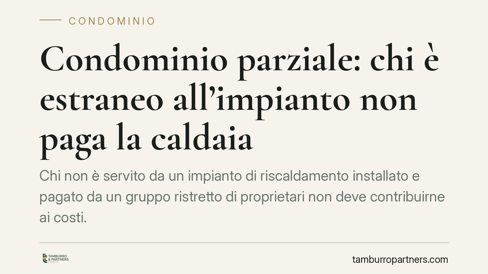

Condominio parziale: chi è estraneo all'impianto non paga la caldaia
Chi non è servito da un impianto di riscaldamento installato e pagato da un gruppo ristretto di proprietari non deve contribuirne ai costi. È il principio ribadito da una recente pronuncia della Corte d'Appello di Roma, che richiama la figura del condominio parziale e il venir meno del vincolo di contribuzione per i condòmini del tutto estranei all'impianto.

Il caso
Un gruppo di proprietari aveva installato a proprie spese esclusive un impianto termico centralizzato. L'amministratore aveva poi ripartito tra tutti i condòmini anche i cosiddetti consumi involontari (le dispersioni di calore delle parti comuni). Alcuni proprietari, mai collegati all'impianto, hanno contestato l'addebito.
La Corte d'Appello di Roma ha accolto la tesi dei dissenzienti: chi è completamente estraneo all'impianto non deve concorrere né ai costi di installazione né ai consumi, nemmeno quelli involontari. Si configura, in questi casi, un condominio parziale.
Inquadramento normativo
Il condominio parziale non è una creazione giurisprudenziale fine a sé stessa: trova il suo ancoraggio primario nell'art. 1123, comma 3, del codice civile. La norma stabilisce che, quando un bene o un servizio è destinato a servire solo una parte dell'edificio, le relative spese gravano esclusivamente sul gruppo di condòmini che ne trae utilità.
In questa cornice va letto l'art. 1117 c.c., che individua in via generale le parti comuni: riferimento sistematico utile, ma che opera "salvo diverso titolo". Un impianto realizzato e finanziato solo da alcuni non rientra automaticamente nel novero dei beni comuni a tutti.
L'art. 1118 c.c. disciplina il diritto del condòmino sulle parti comuni e la correlata obbligazione di contribuzione. Dove manca l'utilità — perché il condòmino non è collegato né può esserlo — manca anche il presupposto della contribuzione. Il vincolo solidale si attenua: non esiste un obbligo di partecipare ai costi di un servizio dal quale si è oggettivamente esclusi.
Implicazioni pratiche
Le conseguenze cambiano a seconda del ruolo.
Per l'amministratore. La ripartizione dei costi dell'impianto, inclusi i consumi involontari, non può essere estesa automaticamente a tutti i condòmini. Addebitare quote a chi è estraneo all'impianto espone la delibera a contestazione e lo stesso amministratore a profili di responsabilità gestionale.
Per i condòmini estranei all'impianto. Non sono tenuti a contribuire, nemmeno ai consumi involontari. È però onere loro reagire tempestivamente a delibere o riparti che li includano indebitamente.
Per i condòmini serviti dall'impianto. I costi — installazione, manutenzione e consumi, inclusi quelli involontari — restano a loro carico, da ripartire secondo i criteri tecnici applicabili all'interno del sottogruppo.
Un chiarimento tecnico: la norma UNI 10200, spesso richiamata nei riparti dei consumi involontari, è uno standard tecnico, non una fonte giuridica vincolante di per sé. Fornisce criteri di calcolo, ma non può imporre la contribuzione a chi è estraneo all'impianto.
Nullità o annullabilità della delibera
La distinzione è decisiva per i tempi di reazione. Se la delibera addebita spese a un condòmino del tutto estraneo all'impianto, può configurarsi un difetto assoluto di attribuzione: l'assemblea dispone su materia che esula dai suoi poteri. In tali ipotesi la delibera può risultare nulla, con possibilità di farne valere il vizio senza il termine breve.
Diverso è il caso del semplice errore nei criteri di riparto tra soggetti comunque obbligati: qui la delibera è annullabile e va impugnata, ai sensi dell'art. 1137 c.c., entro trenta giorni dall'approvazione (per i presenti dissenzienti o astenuti) o dalla comunicazione del verbale (per gli assenti).
La qualificazione richiede analisi puntuale del contenuto deliberato: la linea tra nullità e annullabilità non è sempre netta e incide direttamente sulla strategia difensiva.
Cosa fare in concreto
- Verificate il collegamento all'impianto. Accertate, documenti tecnici alla mano, se la vostra unità sia o meno servita dall'impianto contestato.
- Esaminate il titolo e i riparti. Controllate regolamento, tabelle e delibere per capire su quale base vi è stata addebitata la spesa.
- Qualificate il vizio. Distinguete tra difetto assoluto di attribuzione (possibile nullità) e mero errore di riparto (annullabilità, con termine di 30 giorni ex art. 1137 c.c.).
- Rispettate i termini. In caso di annullabilità, non lasciate decorrere i trenta giorni: oltre, la delibera si consolida.
- Documentate la posizione. Conservate verbali, comunicazioni e corrispondenza con l'amministratore: sono il presupposto di ogni contestazione efficace.
In presenza di riparti dubbi, consigliamo di far valutare la singola posizione prima di assumere decisioni, poiché l'esito dipende dalla documentazione tecnica e dal contenuto specifico delle delibere.
---
Contributo informativo a cura di Tamburro & Partners - Avv. Giuseppe Tamburro. Non costituisce parere legale.
Ogni condominio ha una storia a sé.
Se gestisci un'amministrazione e vuoi un confronto su una specifica questione condominiale, scrivi allo studio. Ti rispondiamo entro un giorno lavorativo.